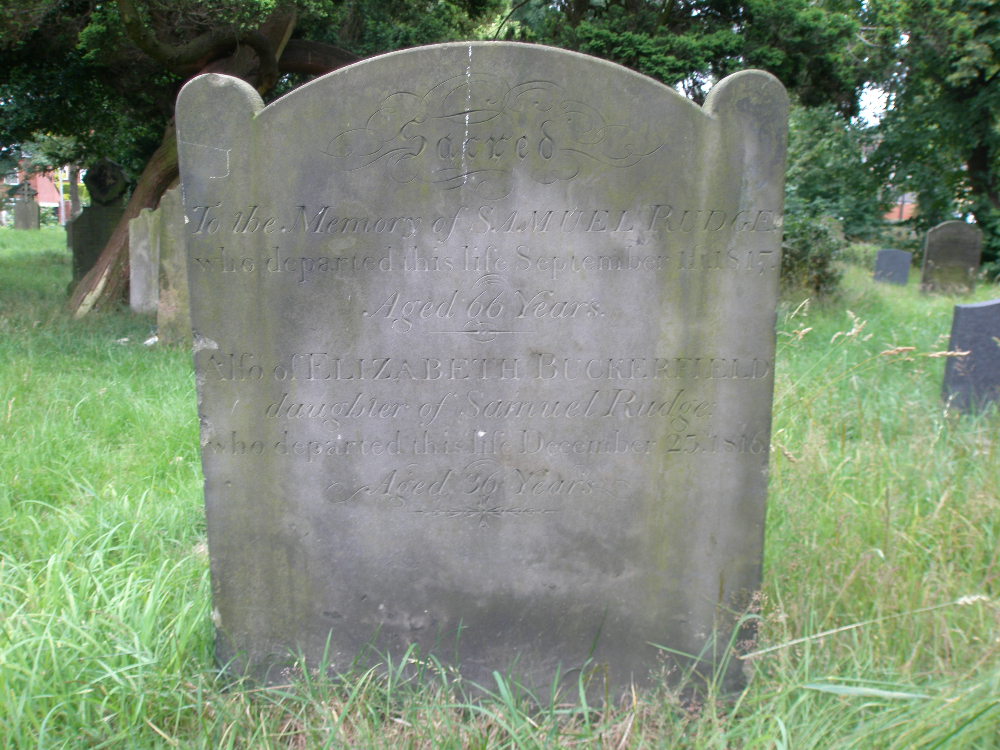
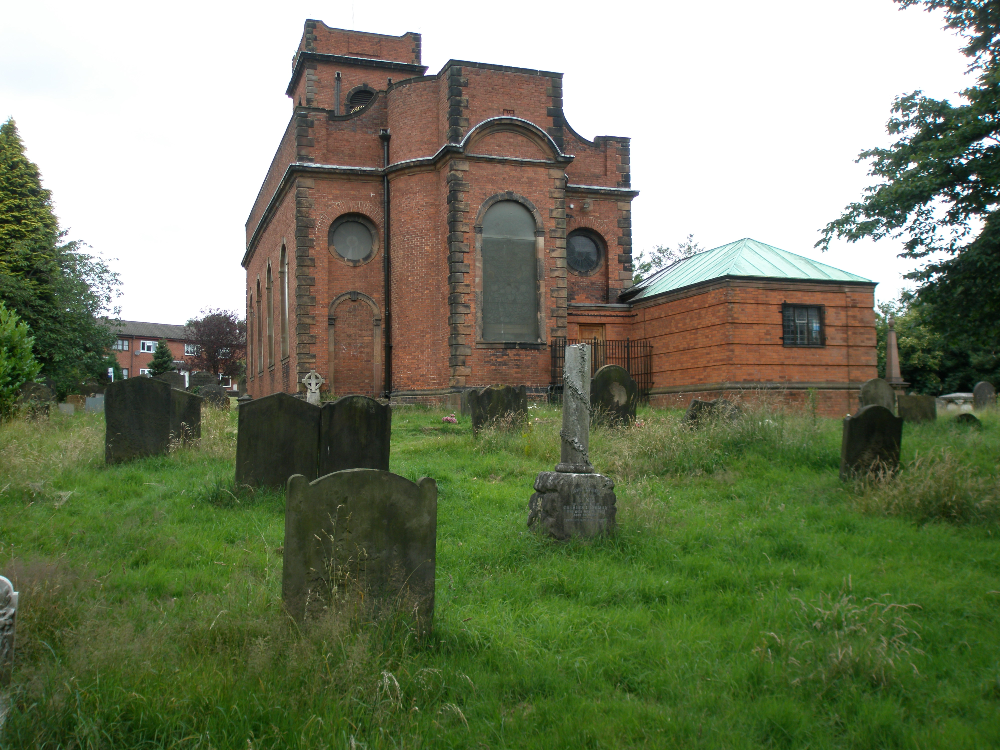

|  |  |
The back of Samuel Rudge's (1751-1817) tombstone is just left of center in the top right photograph, closest to the viewer. The writing appears on the other side.
The inscription reads as follows:
"Sacred. To the memory of SAMUEL RUDGE who departed this life September 1st, 1817. Aged 66 years, Also of ELIZABETH BUCKERFIELD, daughter of the above SAMUEL RUDGE who departed this life December 23rd 1816. Aged 36 years."